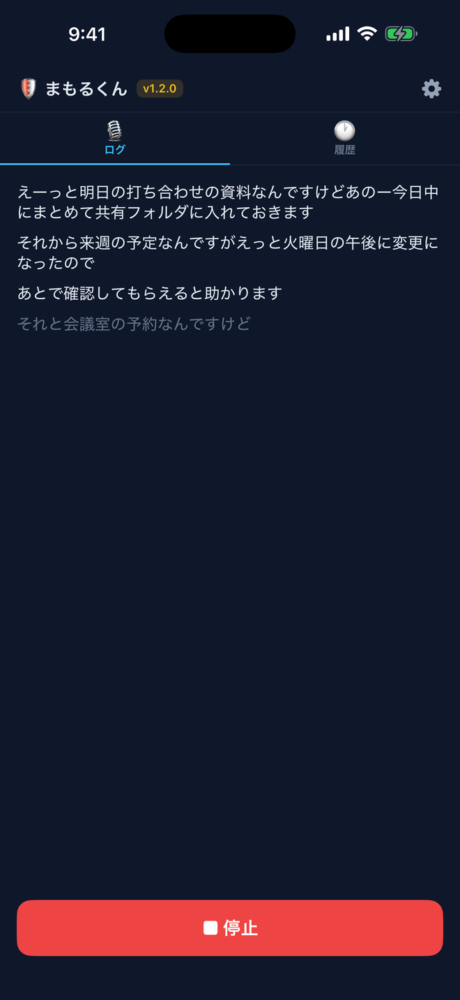
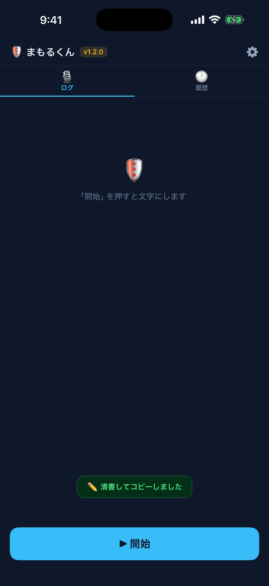
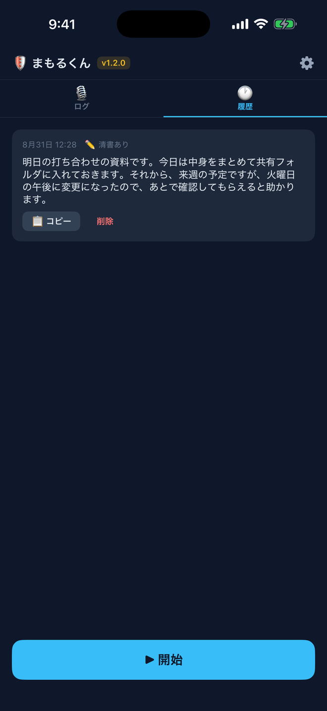

「開始」を押して話すと、話したそばから文字になります。

「停止」を押すと、AI が言い淀みを取り除いて清書し、自動でコピーします。あとは貼るだけです。

清書した文章は履歴に残り、あとからコピーし直せます。
話した内容をその場で文字にする iPhone アプリです。Chrome 拡張の「まもるくん」を、iPhone だけで使えるように作りました。思いついたことを声に出すだけで、あとから読み返せる文章になります。
できること
- 「開始」を押して話し、「停止」を押すだけ。AI が「えーっと」「あのー」といった言い淀みを取り除き、句読点と段落を補った文章に整えて、自動でコピーします
- iPhone 15 Pro 以降では、iPhone に内蔵された AI で清書します。追加の設定も料金も要らず、文章が iPhone の外に出ることもありません
- 内蔵の AI が使えない機種でも、自分の Gemini API キーを登録すれば清書が使えます（登録は任意です）。キーが無くても、話した内容を文字にする機能はそのまま使えます
- 画面を消したまま、長い時間の録音を続けられます
- 聞き取る言語を切り替えられるので、語学の練習にも使えます。画面の表示は日本語のままです
- 録音した音声はファイルとして残しません。書き起こしも履歴も、iPhone の中だけに残ります
iPhone アプリApp Store音声書き起こし端末内に保存無料
関連
パソコンのブラウザで使う Chrome 拡張版のまもるくん と、ヘルプデスクの現場向けに作り直した デスクトップ版まもるくん もあります。